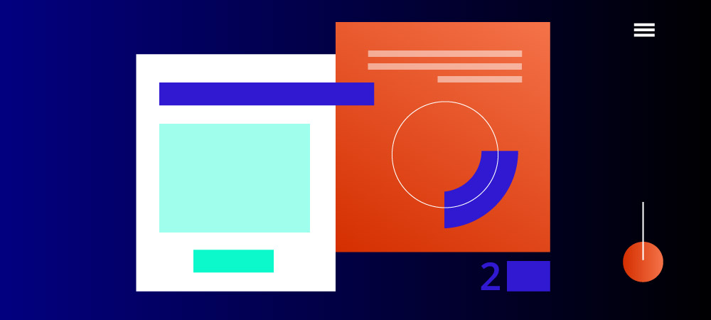
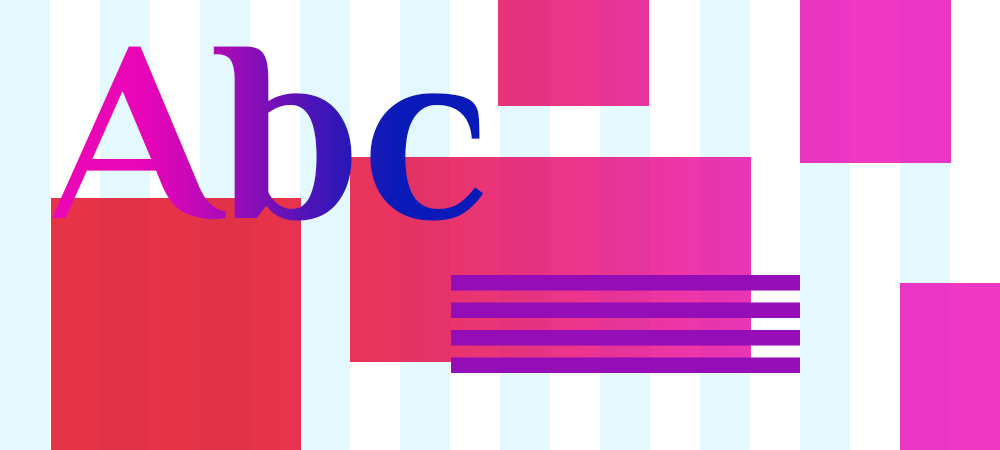
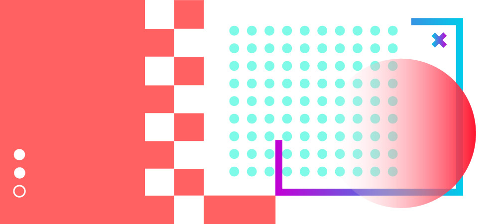
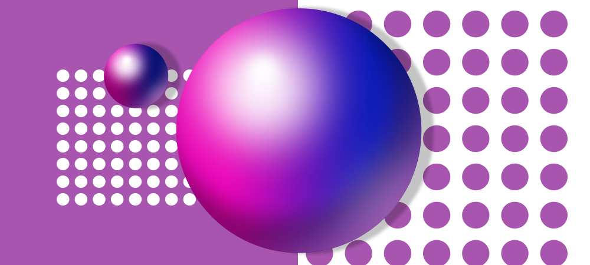
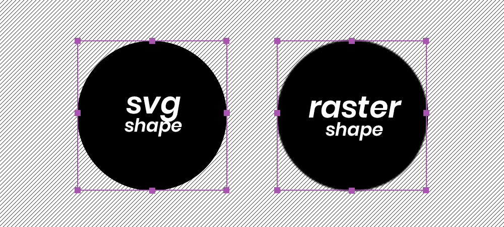
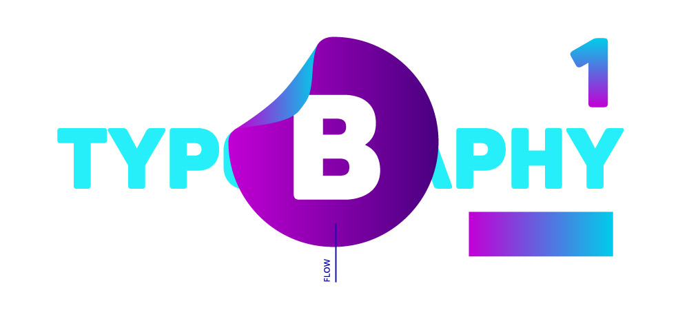

Be prepared for an exciting year in website design! Digital marketing will take on a whole new level of storytelling and sophistication in 2018. This is the year to create beautiful illusions, dynamism, and motion for your brand.
Designers will enhance the user experience by building surprising interactions and by focusing on entertainment. Bold color choices, asymmetric shapes, and three-dimensional backgrounds will infuse personality into your website design.
Digital agencies will also focus on improving subtitle micro-interactions and subliminal marketing. Clever UX design will make content interactive and engaging.
This year the web community will do anything possible to grab attention. Brands will strive to create impactful messages that emphasize action. The web is becoming more and more intuitive, captivating, and smart-phone sized.
For your inspiration, we have listed some of the biggest transformations we expect to see in web design for 2018.
Animated GIFS and Cinemagraphs
Did you know that adding a cinemagraph to a webpage could increase your visitors’ stay on that page by 5% to 15%? It’s such a simple and effective way to drive your online engagement. Unbelievable. Goes to show how much our culture loves animation.
What is a cinemagraph? It’s a static photo in which a slight movement occurs. This throws a total surprise into the sensory scheme of viewers, so they pause and take a second look. You’ve got their attention.
Cinemagraphs are discrete, easy on the eyes, and add a touch of style. These alluring half-photos, half-videos have been very successful in marketing campaigns of giants like Coca Cola or Netflix and are on the rise in website design.
In 2018, we expect more Cinemagraphs to become part of the “hero” images of prominent websites. Web designers will use them to draw interest or produce an emotive effect in the viewer. Cinemagraphs can also be used as subliminal advertising or to add an accent to your information.
The novelty of cinemagrpahs, the element of surprise, and the fact they are very light files that load instantly are a big appeal. They add an extra "linger" factor that keeps people on your site and adds to the experience of what people are reading.
Invisible Details
UX design is moving into improving the invisible details of each webpage. This means creating interesting micro-interactions.
Microinteractions are the small effects and animated elements that help users perceive information and be guided through the layout of a site. When a visitor pushes a button or a call to action is met, what happens next? Users will trigger the micro-interaction, which in turn, triggers another part of the process. Users expect micro-interactions to activate immediately, within 0.1 seconds of a click.
Microinteractions might be small, but they are mighty. Those little details are essential to drive engagement and set your UX apart. Microinteractions have the power to enhance the user experience, provide important feedback, explain functions, and even entertain your audience. They offer subtle guidance to your users and improve on-site navigation.
Overall micro-interactions help strengthen your brand image and voice. They are also a great way to infuse personality into your web design. If designed well, those small repetitive actions can encourage users to interact, like, or share content, just because it’s fun for them to initiate an action.
High Contrast

Hello, boldness! Electric colors and gradients are back in style.
2018 is a year of bold tones and brave color combinations. Brands will let creativity run free and will welcome bright and vibrant colors. Pantone announces the color of the year for 2018 is Ultra Violet, talk about bold.
It’s undeniable; colors have a direct effect on our emotions. Different combinations of colors have the power to draw attention, set a mood, or influence users’ actions. Advertisers have known for years that over 90% of our assessment of a product is made on color alone. The same goes for web design and branding. Your color codes have a visual impact on visitors.
Next year, we expect designers to use rich color tones or placing highly saturated vibrant colors against a dark background to differentiate the dynamics of a website and accentuate the personality of a brand. Gradients seem to be also coming back, blending and blurring exuberant shades together.
The arrangement of color components should allow the reader to easily focus on the message, without slowing down the speed of their reading.
Breaking the Grid

While at the beginning of the mobile-first era, the web layouts were created according to different grid systems (6, 12 columns), designers are starting to "break" the rules by using asymmetric and non-symmetrical compositions.
Creating an asymmetrical web design does not mean the absence of balance or harmony. Good asymmetry is tricky to achieve, but it can be extremely beautiful. Asymmetrical shapes can create a feeling of dynamism, energy, or a sense of motion. Asymmetry throws an element of surprise.
Designing asymmetry can help to separate different web elements of a web page from the rest of the content (your navigation, a call to action). This is a great way to provide more room for information and usability.
Using asymmetry designers can draw attention to an area of your site (a message) and reorganizing your content. Asymmetrical pages create contrast and dimension on a web page. Great examples are asymmetric photo placements, or pairing elements or text with an image, creating an eye track from the image to the words on the screen.
Geometric Elements

In 2018, geometry is making a comeback in website design. Prepare to see unusual patterns and shapes.
Geometrical shapes and patterns help create a unique visual flow and are an excellent way to grab attention. If positioned well, figures can act as a beautiful focal point for a design, add animated background effects, framing components, or navigation elements. The idea is to add depth to a web page and create a special spin to your brand message.
Geometric figures can counterbalance simple design visuals and add an effect of sophistication and class. Another fantastic result is the ability to create optical illusions. When used precisely, geometric patterns can bring up the illusion of movement.
Introducing gradients and transparency layers or using original geometric photo frames and image cutouts can be extremely eye-catching for visitors and add personality to your branding.
Videos Keep Scoring
Video is everywhere and has become THE fastest-growing segment of digital advertising with the highest ROI online. Video content triggers emotions by combining elements like the tone of voice, facial expressions, body language, and music. It creates trust, ignites curiosity, and provides entertainment value.
As video has become more accessible, very popular, and easier to use on a website, we are bound to see more videos embedded into website design. For example, homepage background videos can tell fantastic stories about your products/services within seconds. Video testimonials can influence your visitors and sell your products twice as fast if you have the right influencer talking about your brand. Tutorials, lectures, and VBlogs can help you boost your notoriety online and step in front of your competition.
To get the point across, make your video stories as simple, flawless, and easy on the eye as possible. Storytelling is the best way to grab attention. Make your content short and entertaining.
Flat No More

After a shift from skeuomorphism to flat design a few years ago, we see a shift again in web design. Flat designs are a thing of the past. In 2018, the job of a web designer is to create patterns of color for glowing two-dimensional screens. This can be achieved by using drop shadows, bulk elements, and 3D shapes providing a unique depth effect. Combined with old school reflections, shadows can give objects a realistic feel and certainly succeed in creating something unique and out of the ordinary.
Drop-shadows and gradients are basic tools for creating the illusion of space and suggest a spatial relationship between the viewer and the page. This results in adding perspective and visual immersion.
When done well, two-dimensional information makes web design more beautiful. It makes a web page stand out by making objects appear to stick out from, or float above, other elements. In two-dimensional websites, designers can play with the light to create a story, call to action, or highlight a message.
“Custom-Made” Is Back in Fashion
As each brand strives to be different and distinctive, the number of custom websites will increase dramatically in 2018. In recent years, ready-to-go- platforms (like Word Press) have helped mushroom so many cookie-cutter websites. However, besides their uniform vision, all those websites have been experiencing a number of problems with their administration and security. There is currently a big wave of companies upgrading from a cheap open-source website to a custom-built one created to serve the needs of the brand.
If your company needs to collect secure payments, needs a user-friendly shopping cart experience, or a more professional unique look and feel, it’s time to upgrade to a custom site. A custom website is a site created from scratch which emphasizes your branding and business goals. It’s a site created specifically for your business with your target customers in mind, but also those that will administer it at your organization. A custom website takes a great deal of research to understand the brand’s positioning, market segmentation, and online challenges.
SVG Content

Scalable Vector Graphics (SVG) are becoming extremely popular and are replacing illustration files online. Although SVGs have been around for over 3 years, the technology is becoming massively used only now.
The web is no longer static and it’s time for images to catch up. Every element on your website should be responsive. Why? Because your fans connect with your brand not just on their desktops, but most of the time on the go (tablets, smartphones, laptops).
The problem with fixed image sizes (JPG files, GIFs, PNGs) is that they are static. For that reason, designers have been creating several different versions of each image on your site, scaling them at the largest size at which they will be displayed.
On the other hand, SVGs are files that contain code, which is calculated and rendered by your browser. They can be compressed to extremely small sizes. This makes them more flexible then JPG files and resolution-independent. As vector graphics, SVG files can be resized without losing any image quality. This is fantastic for responsive websites that need to look good across all screen sizes.
More and more websites are incorporating SVG for their icons, illustrations, or other visual elements. Because online SVG files can be styled with CSS, you can use CSS animations on them as well. Having scalable, light images has a positive impact on a site’s overall performance and download speed.
Mobile Kingdom
This year, the mobile consumption of websites outperformed desktop consumption by a good 50%. As mobile phones are becoming the most used device for browsing online, web designers will keep striving to make mobile versions more and more interesting, prioritizing mobile web design.
A “mobile-first” design approach is the process of designing for a mobile screen first, then focusing on bigger resolutions. Most smartphones come with very small screens, which limits the amount of content a user can see at once. This forces brands and UX designers to keep the message to its core.
With Google’s algorithm and stats pushing mobile dominance, having a good responsive design should be high on your priority list. A well thought out mobile design will become a key to successful marketing campaigns in 2018. This is a trend that will only keep growing.
Bold Typography

Broken fonts, contrasting sizes, and interesting rhythms are making up the typography elements of 2018. As designers are looking to include bold typography choices, fonts will become a visual element, not only reading content.
Expect to see an increase of over-sized headings, full-screen typefaces, unique hand-rendered typography, and lots of dynamic text. Typography is a wonderful way to infuse more personality into a website, adding hand-drawn elements and bright arrangements. Typography is a powerful visual medium, able to create personality, evoke emotions, and set your tone of voice.
2018 will be an exciting year. Let’s take advantage of it and advertise your brand together. For web design advice, say hello@edesignintrecative.com.